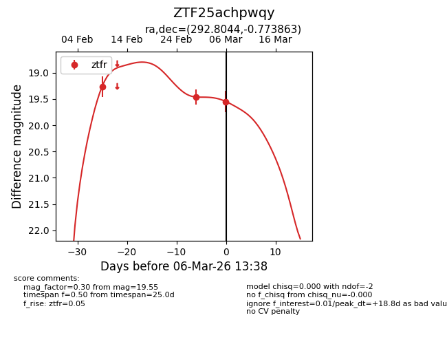
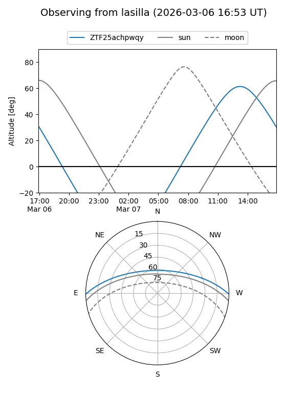
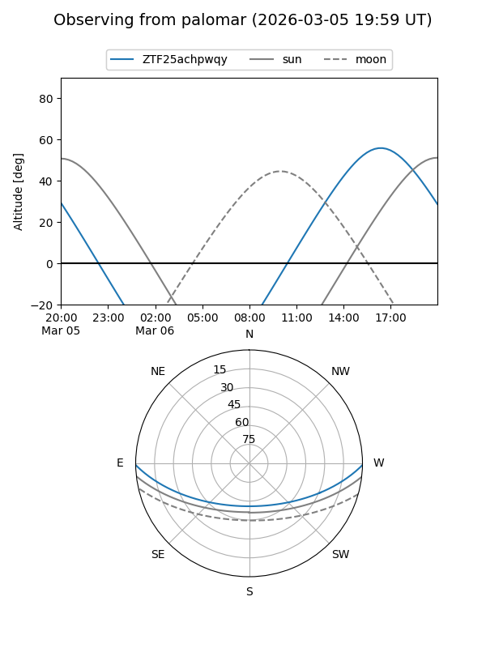
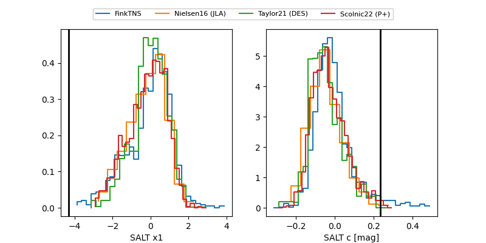

ZTF25achpwqy
Target ZTF25achpwqy at 2026-03-06 13:39
Aliases and brokers:
FINK: link
Lasair: link
ALeRCE: link
alt names
ZTF25achpwqy (ztf,fink_ztf)
Coordinates:
equatorial (ra, dec) = 292.8044,-0.77386
equatorial (HMS+DMS) = 19:31:13.05,-00:46:25.91
galactic (l, b) = (36.8075,-9.19797)
Flags:
Photometry:
last ztfr=19.55
3 ztfr detections
Lightcurve

Visibility


Additional plots
